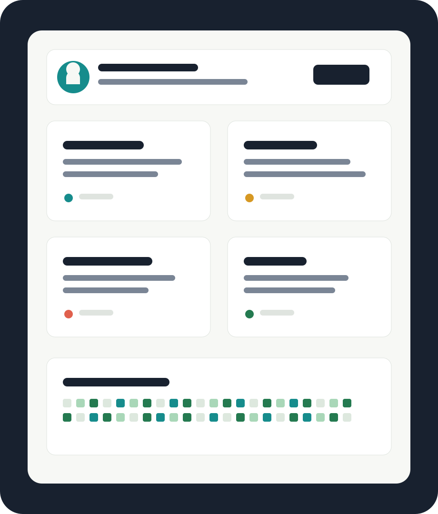

Open source portfolio
把你的 GitHub 專案整理成一個漂亮、好逛的網站。
展示代表作品、技術能力、貢獻紀錄與聯絡方式。這個網站可以直接放到 GitHub Pages，改文字、換連結就能成為你的個人入口。

Selected work
代表專案
用標籤快速切換不同類型的作品，讓訪客直接看到他們在意的內容。
Teachable Machine
AI 影像辨識模型
這裡已接上你匯出的 Teachable Machine 模型，可以上傳圖片，或在支援相機的瀏覽器中開啟即時辨識。
224
Image model ready
上傳圖片或啟動相機開始辨識。
模型尚未載入
載入模型後會在這裡顯示信心分數。
How it works
讓訪客用三步理解你
-
01
快速定位
首頁直接說明你做什麼、擅長什麼，減少陌生訪客的理解成本。
-
02
展示成果
專案卡片用簡短描述、技術標籤和 repo 連結，把亮點放在第一層。
-
03
建立連結
聯絡區保留 GitHub、Email 和 LinkedIn，方便合作、面試或交流。
Contact
把這裡換成你的資料
更新名稱、簡介、專案和社群連結後，就可以把整個資料夾發布到 GitHub Pages。